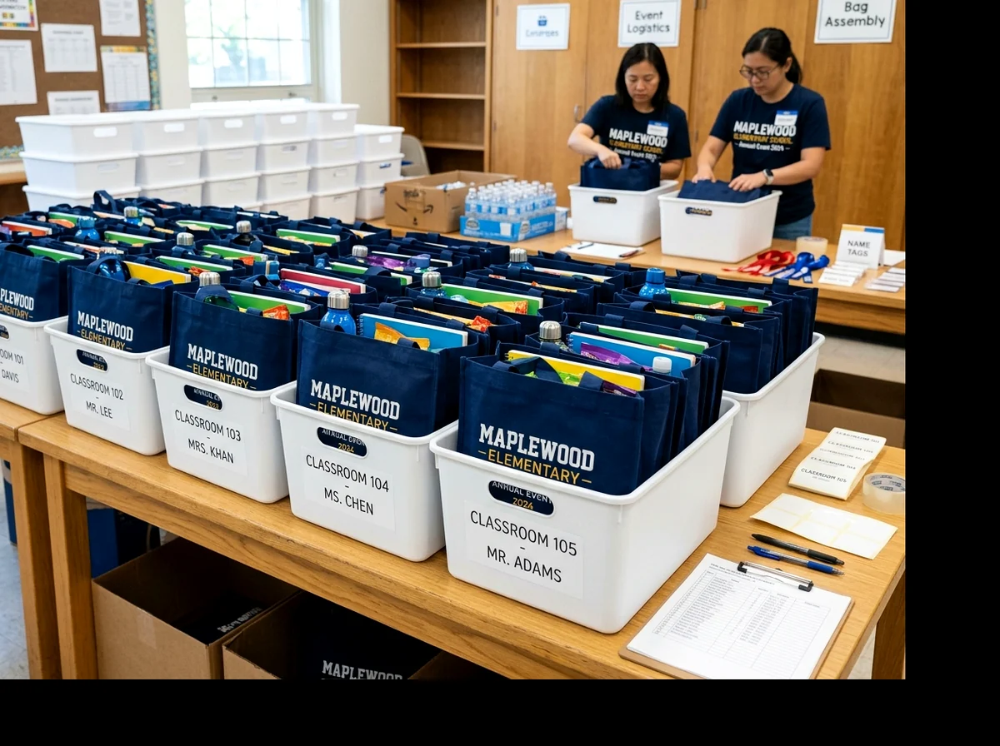

Vendor goodie bag MPLS sebaiknya dipilih melalui penawaran berspesifikasi jelas, sampel yang dapat diuji, jadwal produksi realistis, dan kesepakatan kualitas tertulis.
📌 Ringkasan Inti Panduan:
- Susun lembar brief spesifikasi teknis tas secara mendetail sebelum meminta surat penawaran harga.
- Bandingkan beberapa penawaran vendor berdasarkan spesifikasi bahan yang setara (apple-to-apple).
- Uji kekuatan dan ukuran sampel fisik tas menggunakan seluruh perlengkapan paket aktual.
- Kunci approval desain grafis logo dan jumlah kuantitas final sebelum lini produksi massal berjalan.
- Sediakan jendela waktu tenang (buffer time) minimal 5-7 hari sebelum hari H untuk penghitungan koli kargo.
1. Apa Saja Informasi yang Harus Dikirim ke Vendor?
Permintaan penawaran goodie bag MPLS menjadi jauh lebih cepat dan akurat apabila panitia melampirkan kuantitas estimasi, jenis kain, ukuran ruang bersih, teknik branding, serta tanggal barang harus tiba di sekolah.
Permintaan harga yang hanya berbunyi "minta harga tas seminar murah" menyulitkan pihak konveksi untuk menghitung kalkulasi modal kain dan benang. Perbedaan gramasi bahan (misal spunbond 75 GSM vs 100 GSM), model sambungan jahit, dan jumlah warna sablon dapat memunculkan selisih harga signifikan. Susunlah dokumen Rincian Anggaran Biaya (RAB) dengan parameter teknis yang seragam.
2. Bagaimana Membuat Brief Pemesanan Goodie Bag MPLS?
Brief pemesanan resmi menjadi pedoman kerja yang mengikat pihak sekolah dan vendor konveksi tas agar hasil akhir sesuai kesepakatan.
| Komponen Brief | Spesifikasi yang Dicantumkan | Tujuan & Standar Mutu |
|---|---|---|
| Peruntukan Acara | Paket Masa Pengenalan Lingkungan Sekolah (MPLS) | Menentukan karakter tas dan ketahanan yang dibutuhkan |
| Estimasi Kuantitas | Jumlah siswa baru PPDB + cadangan 3-5% | Menghitung skema harga grosir bertingkat (tier pricing) |
| Pilihan Bahan Kain | Spunbond 100 GSM / Blacu Katun / Kanvas Twill | Menjamin ketebalan sesuai rujukan di Bahan Tas MPLS |
| Dimensi Ruang Pakai | Tinggi x Lebar x Lipatan Gusset (misal: 35 x 25 x 8 cm) | Menjamin buku modul A4 muat tanpa melengkung |
| Aplikasi Desain Logo | Sablon manual pasta rubber 2 warna / DTF presisi | Akurasi warna almamater dan ketahanan cuci |
| Target Pengiriman | Tiba di sekolah minimal 5 hari sebelum hari H | Waktu aman penataan paket isi per kelas |
3. Bagaimana Membandingkan Harga Vendor secara Setara?
Bandingkan surat penawaran harga (SPH) beberapa konveksi dengan meneliti rincian biaya dasar tas, biaya plat/film sablon, packing per plastik koli, dan ongkos ekspedisi sampai lokasi gudang sekolah.
Vendor yang menawarkan harga satuan paling rendah belum tentu menjadi pilihan paling ekonomis jika ongkos kirim cargo, biaya master cetak sablon, dan plastik pelindung ditagihkan terpisah sebagai biaya tambahan. Mintalah penawaran dengan skema harga all-in sampai barang diterima di depan pintu sekolah. Kunjungi juga Profil Workshop & Konveksi Kami untuk melihat kapasitas mesin dan fasilitas produksi kami di Malang.

4. Mengapa Sampel Fisik Penting Sebelum Pesan Banyak?
Sampel fisik prototipe (mockup 2D fisik) berfungsi memvalidasi kejelasan ejaan logo sekolah, kerapian stik jahitan, serta kenyamanan saat tas diisi barang-barang orientasi.
Mockup digital di layar komputer sering kali terlihat sempurna, namun tidak dapat membuktikan apakah bukaan tas cukup fleksibel saat dimasuki tumbler dan map ijazah (simak perlengkapannya di Isi Goodie Bag MPLS). Ujilah sampel tersebut di depan forum panitia guru dan OSIS sebelum menandatangani persetujuan produksi massal.
5. Bagaimana Mengelola Jadwal Produksi dan Pengiriman?
Jadwal pengadaan goodie bag sekolah idealnya ditarik mundur 3 hingga 4 minggu sebelum upacara pembukaan MPLS dimulai.
Linimasa pengadaan yang terstruktur mencegah kepanikan logistik:
- Minggu 1: Pengajuan brief spesifikasi, perbandingan vendor, dan persetujuan anggaran komite sekolah.
- Minggu 2: Pengiriman sampel fisik prototipe dari vendor, proofing sablon, dan tanda tangan kontrak SPK.
- Minggu 3: Proses potong kain (cutting), sablon massal, perakitan jahit, dan quality control pabrik.
- Minggu 4 (Awal): Ekspedisi kargo tiba di sekolah, pemeriksaan koli sampling, dan pengemasan buku modul per kelas.
6. Bagaimana Melakukan Quality Control Ketika Barang Datang?
Pemeriksaan penerimaan pesanan di sekolah harus memverifikasi kesesuaian jumlah fisik per koli, kerapian tusukan jarum obras, kebersihan kain dari bercak tinta, dan presisi penempatan logo.
Ambil 5–10% sampel tas dari berbagai tumpukan karung koli. Periksa bagian krusial yang paling sering mengalami kecacatan: pangkal tali jinjing, jahitan sudut bawah, dan kejelasan tulisan nama sekolah. Jika ditemukan kecacatan mayor, segera laporkan ke pihak konveksi menggunakan foto dokumentasi yang jelas untuk pengajuan kompensasi sesuai kesepakatan.
7. Kesalahan Apa yang Sering Terjadi dalam Pemesanan?
Kesalahan fatal yang sering terjadi antara lain memesan tas terlalu mepet (kurang dari seminggu), mengirimkan file logo resolusi rendah yang pecah saat disablon, serta tidak menyediakan tas cadangan bagi siswa susulan.
Pastikan selalu menggunakan file logo asli berformat vektor kurva (.AI, .CDR, atau .PDF) dan sisihkan alokasi cadangan tas sekitar 3-5% dari total kuota rombel siswa baru.
8. Pertanyaan Umum Seputar Vendor Goodie Bag MPLS (FAQ)
9. Kesimpulan Praktis Pemilihan Mitra Vendor
Memilih vendor konveksi goodie bag MPLS adalah langkah strategis untuk memastikan kelancaran hari pertama orientasi siswa baru. Siapkan brief tertulis, mintalah sampel nyata, dan lakukan pemeriksaan ketat saat pesanan tiba. Untuk melihat model tas dan pedoman penganggaran, rujuk kembali ke Goodie Bag MPLS Sekolah.
Ditulis oleh Tim Redaksi Goodie Bag
Disusun dan dikurasi oleh tim produksi Goodie Bag Malang. Menghadirkan wawasan praktis seputar pemilihan bahan kain, teknik sablon, dan efisiensi pengadaan souvenir tas sejak 2016.
Artikel Terkait Seputar Goodie Bag & MPLS Sekolah